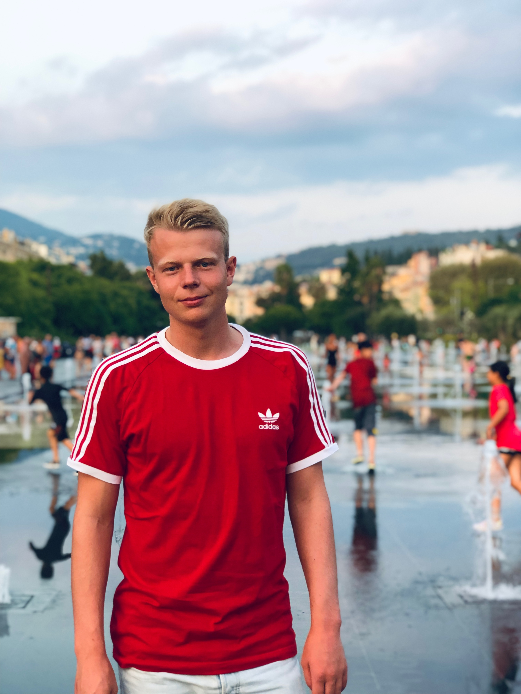

Om mig

Jag heter Pontus Jaensson är 23 år gammal och bor i Lund. Ursprungligen kommer jag från Färjestaden på Öland men det är här i Skåne som jag ska spendera min sommar. Just nu studerar jag mitt fjärde år på civilingenjörsutbildningen inom datateknik på Lunds tekniska högskola och söker ett sommarjobb som ligger i närheten av de ämnen jag studerar. Jag tycker om nya utmaningar och jag är inte rädd för att prova på nya saker. Jag ser mig själv som en social person som älskar att lösa problem och som inte är rädd för att lägga ned den extra tid som behövs för att resultatet ska bli så bra som möjligt. När jag är klar med min utbildning skulle jag vilja arbeta med större projekt där jag har ett stort ansvar för hela processen. I framtiden skulle jag vilja utveckla och förbättra system som skulle ha en positiv inverkan samhället.
Eftersom jag går mitt fjärde år på datateknik skulle jag säga att jag har en god grundläggande kunskap inom mitt studieområde. Under dessa tre år har jag främst programmerat i Java, Scala och Haskell men jag har även en grundläggande kunskap inom andra programspråk. Grupparbeten har varit ett återkommande segment inom min utbildning som jag uppskattar väldigt mycket. Jag tycker det är kul att jobba i team och tillsammans sträva efter att lösa ett gemensamt mål. Jag är heller inte rädd för att ta på mig en ledarroll i gruppen om det skulle behövas.
Ett av mina största intressen är fotboll. Jag har spelat fotboll i stort sett hela mitt liv och jag tycker det är lika roligt fortfarande. Just nu spelar jag i Södra Sandby IF och innan dess spelade jag bland annat i Lunds SK och IFK Berga i Kalmar. Fotbollen har alltid varit en del av vardagen i min familj och det är även genom fotbollen som jag har lärt känna de flesta av mina närmaste vänner. Under den här hösten har jag hittat ett sätt att kombinera mitt stora intresse för fotboll med programmering. Jag har tillsammans med en kompis skapat ett program som utvärderar de bästa spelarnas prestationer i den engelska högstaligan.
Arbetslivserfarenhet
Produktionsmedarbetare - Electra Sweden AB
2016-2017 var jag heltidsanställd och fick under den tiden ta ett större och större ansvar att bemöta de leveranskrav som fanns på min avdelning. Sedan dess har jag kommit tillbaka varje sommar för att arbeta.
Fotbollsinstruktör - Smålands FF
Under den här tiden var jag ledare för de regionala ungdomslägren som förekom 4-5 gånger varje år.
Vaktmästare - Färjestadens GoIF
Mitt första riktiga sommarjobb var som vaktmästare och planskötare för den lokala fotbollsföreningen.
Swullomästare - Swullo
Heltidsarbete med att underhålla 105:an...
Utbildning
Naturvetenskapliga programmet
Lars Kaggskolan
Civilingenjörsprogrammet inom datateknik med specialisering Software engineering
Lunds tekniska högskola